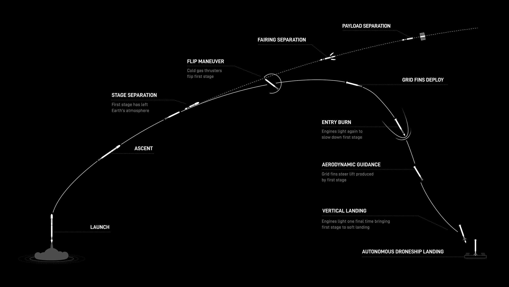

Where are we now?

We've come a long way since Gagarin's single orbit. In the 21st century, humans have walked on the Moon, sent rovers to Mars, and now routinely launch deep-space probes. Telescopes like Hubble and James Webb capture images of things almost too vast to comprehend. We understand what black holes are and how they behave; we even know, in broad strokes, how our own Sun will eventually die and take the solar system with it. The list of discoveries keeps growing — each one a small step toward interplanetary, and maybe eventually intergalactic, civilization.
One of the biggest obstacles isn't scientific — it's financial. No company or agency has an unlimited budget to launch missions whenever it wants. That's part of why SpaceX and others have poured so much effort into reusable rockets: launch vehicles that land themselves after delivering their payload, dramatically cutting the cost of getting to orbit.
The next major milestone is a crewed mission to Mars. NASA has floated 2033 as a target, though 2040 is arguably more realistic. The idea itself isn't new — aerospace engineers have studied Mars missions since the late 1940s, including proposals to explore its moons, Phobos and Deimos, and long-term visions of settlement and terraforming.
Getting there safely means solving some serious engineering problems. Mars' atmosphere is thin, so spacecraft descend much faster than they would on Earth and need a heat shield plus new deceleration techniques — NASA is actively researching retropropulsive descent methods, but managing fluid dynamics and vehicle attitude during supersonic retropropulsion is still an open problem.
A return mission adds another layer of difficulty: landing a rocket capable of carrying a crew back off the Martian surface. Thanks to Mars' lower gravity, that rocket could be far smaller than an Earth-launch vehicle and might even reach orbit in a single stage — but landing it safely in the first place remains a serious challenge, especially for anything large.
So, what's next? Venus? A deeper look at our own Sun? Missions beyond our solar system? Whatever it is, it'll come with its own set of challenges — ones we might get to unpack next time. Thanks for reading.